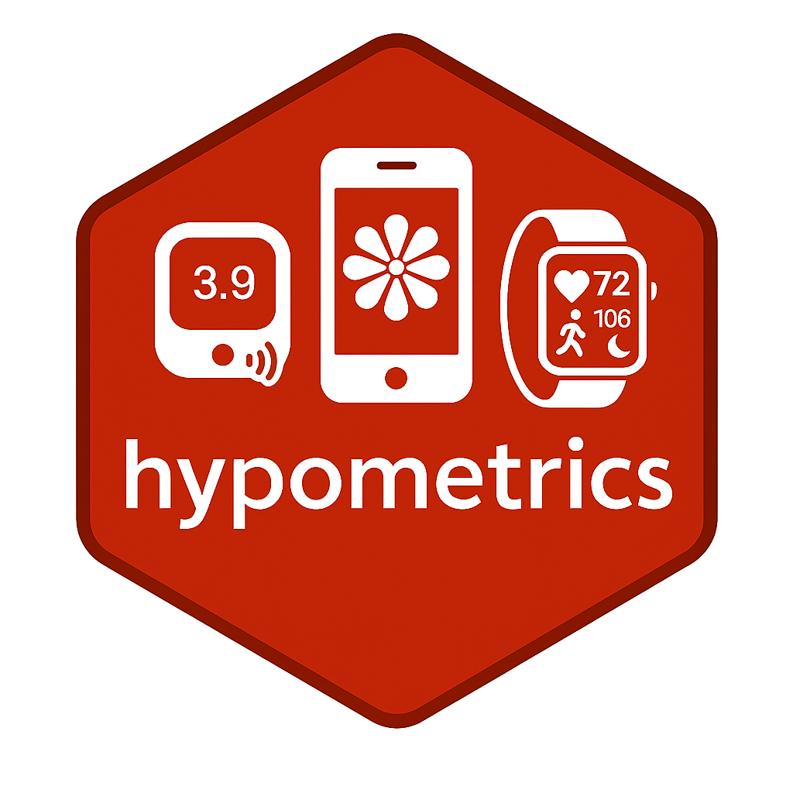

Visualise Glucose linked with Activity Data
Source:R/linkingFunctions.R
cgmactivityVisualise.RdPlots Glucose with Activity Data Over Time
Usage
cgmactivityVisualise(
DataFrame,
StudyID,
TimeBreak = "no",
PageNumber = NA_real_,
AddSleep = "no",
DataType
)Arguments
- DataFrame
A dataframe of CGM data linked with activity data. Output of the cgmactivityLink function.
- StudyID
ID of participant for whom CGM data will be plotted.
- TimeBreak
Character object which defines whether plot outputs should be split by time period. Default is "No" in which case there will be a single plot produce including data for the whole period. Other options are "week" and "day" in which case multiple plots will be produced according to TimeBreak.
- PageNumber
Vector indicating which page (i.e. week/day) number selected for visualisation as plot is faceted according to TimeBreak.
- AddSleep
Character object for the user to specify whether the CGM plot will have added day/night visualisation ("no" - default) or sleep/awake visualisation ("yes"). If set to "yes", the function requires a CGM dataset with a sleep_status (Awake vs asleep) column as input - this can be achieved by running the cgmsleepLink followed by the cgmactivityLink function.
- DataType
Character object determining which activity data to process. 2 options available: "stepcount" or "heartrate".
Value
A graphical representation showing glucose trace with step count or heart rate over time with shaded area representing night or sleep time.
Details
This functions plots CGM with activity data (either step count or heart rate) over time with light grey shaded area corresponding to the time period between 00:00 and 06:00 as typically used to describe nocturnal hypoglycaemia. The function offers the options to look at the glucose data over the entire study period, for a specific week or specific date. It also offers the option to plot data with corresponding sleep status (sleep periods in light grey, awake periods in white) if sleep tracker data is available. Where sleep data is missing, the area is dark grey.